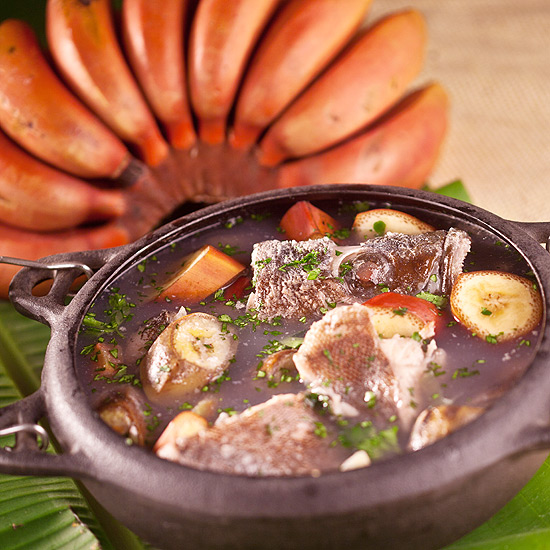
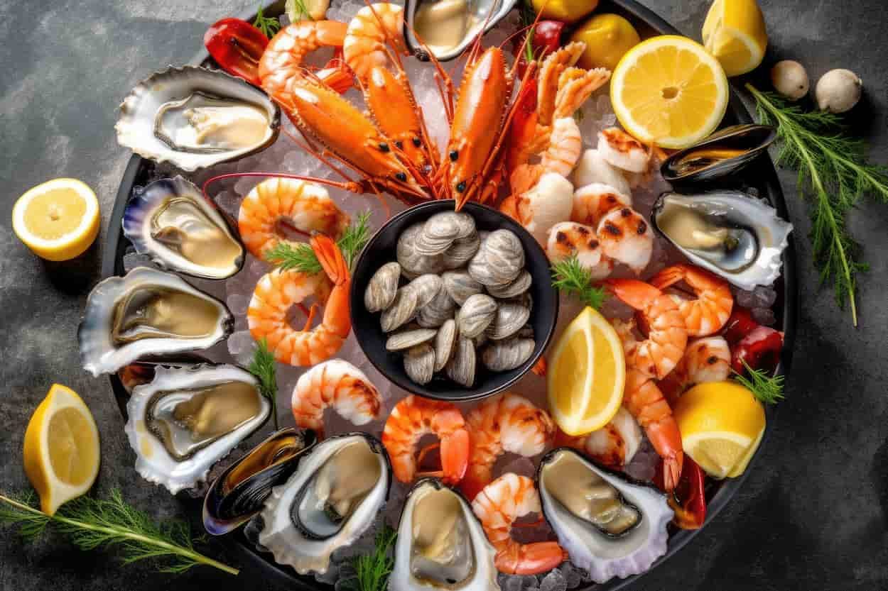
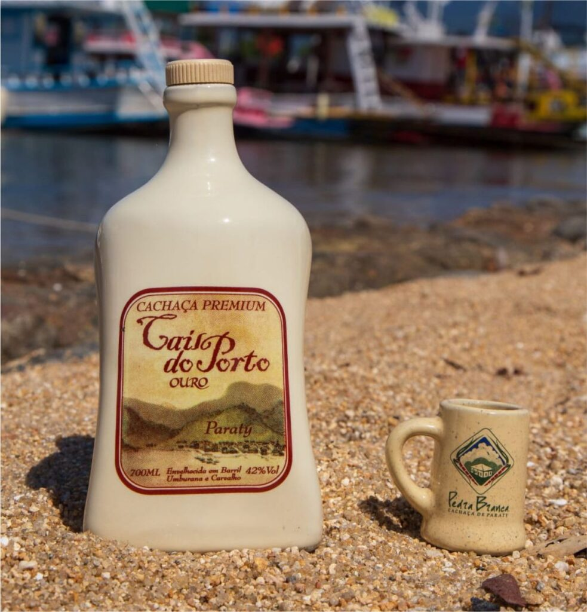
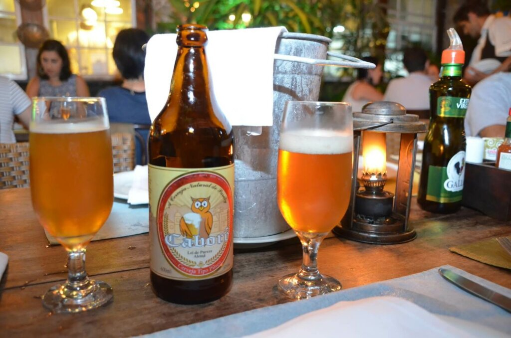
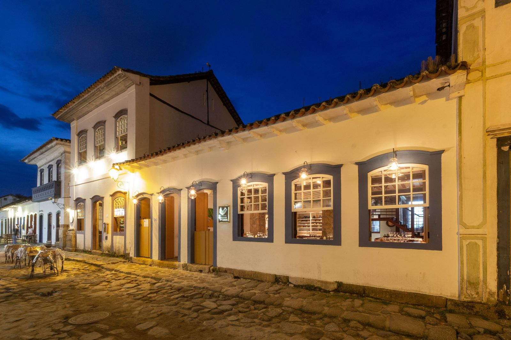
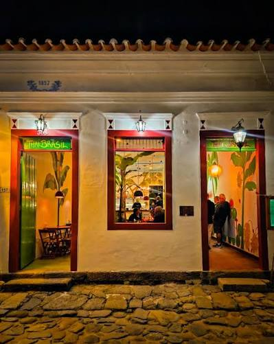
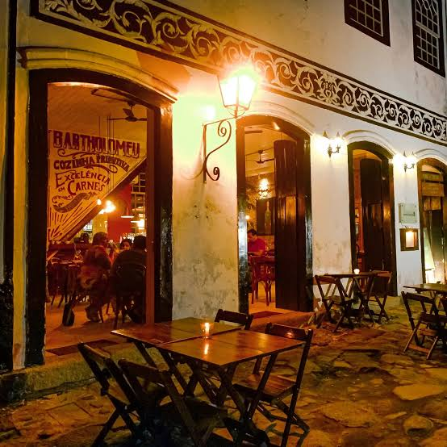

Sabores que contam nossa história
Da culinária caiçara aos restaurantes aclamados, Paraty é um verdadeiro paraíso gastronômico.
Pratos típicos

Azul-marinho
Peixe cozido com banana verde.

Frutos do mar
Frescos nos cardápios do centro.

Cachaça artesanal
Patrimônio cultural do Brasil.

Cerveja artesanal
A Macunaíma, de Paraty.
Restaurantes em destaque

Banana da Terra
Culinária brasileira
Ingredientes da região em pratos criativos, no centro histórico.
Ver no mapa

Bartholomeu Primitivo
Carnes na brasa
Carnes suculentas feitas na brasa, também no centro histórico.
Ver no mapa